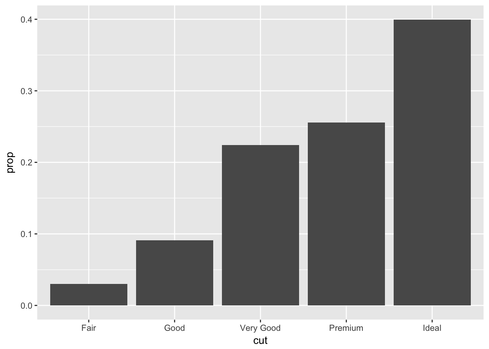

Visualizacion y Manipulación
joseangeldiazg
10/1/2018
Prácticas de prepocesamiento y clasificación
Visualización con ggplot
library(ggplot2)
library(tidyverse)Vamos a utilizar el dataset mpg. Es en un conjunto de datos con información relativa a sus datos técnicos.
mpg## # A tibble: 234 x 11
## manufac… model displ year cyl trans drv cty hwy fl class
## <chr> <chr> <dbl> <int> <int> <chr> <chr> <int> <int> <chr> <chr>
## 1 audi a4 1.80 1999 4 auto(… f 18 29 p comp…
## 2 audi a4 1.80 1999 4 manua… f 21 29 p comp…
## 3 audi a4 2.00 2008 4 manua… f 20 31 p comp…
## 4 audi a4 2.00 2008 4 auto(… f 21 30 p comp…
## 5 audi a4 2.80 1999 6 auto(… f 16 26 p comp…
## 6 audi a4 2.80 1999 6 manua… f 18 26 p comp…
## 7 audi a4 3.10 2008 6 auto(… f 18 27 p comp…
## 8 audi a4 qua… 1.80 1999 4 manua… 4 18 26 p comp…
## 9 audi a4 qua… 1.80 1999 4 auto(… 4 16 25 p comp…
## 10 audi a4 qua… 2.00 2008 4 manua… 4 20 28 p comp…
## # ... with 224 more rowsVamos a representar algunos datos gráficamente como puntos.
ggplot(data=mpg)+
geom_point(mapping=aes(x=displ,y=hwy))
Vemos una relación en la que a más cilindrada, la eficiencia energética disminuye. Hay algunos puntos que se escapan de la tendencia, por lo que sobre este gráfico vamos a obtener el tipo de coches. Puede ser que haya solapamiento, por lo que necesitamos añadir el parámetro position=“jitter”, lo que añade una variacion aleatoria para que no se solapen.
ggplot(data=mpg)+
geom_point(mapping=aes(x=displ,y=hwy, color=class), position = "jitter")También podemos hacer una discriminación por tamaño.
ggplot(data=mpg)+
geom_point(mapping=aes(x=displ,y=hwy, color=class, size=year))Por último, podemos hacer una discriminación por forma o por transparencia.
ggplot(data=mpg)+
geom_point(mapping=aes(x=displ,y=hwy, alpha=class))ggplot(data=mpg)+
geom_point(mapping=aes(x=displ,y=hwy, shape=class))## Warning: The shape palette can deal with a maximum of 6 discrete values
## because more than 6 becomes difficult to discriminate; you have 7.
## Consider specifying shapes manually if you must have them.## Warning: Removed 62 rows containing missing values (geom_point).Otro gráfico interesante y fácil de realizar es el boxplot.
ggplot(data=mpg, mapping = aes(x=class, y=hwy))+
geom_boxplot()
También podemos hacer de una manera sencilla una agrupación de puntos en gráficos diferentes. Para ello:
ggplot(data=mpg)+
geom_point(mapping=aes(x=displ,y=hwy, color=class))+
facet_wrap(~ class, nrow=2)También podemos obtener los gráficos agrupados por varias variables:
ggplot(data=mpg)+
geom_point(mapping=aes(x=displ,y=hwy, color=class))+
facet_grid(drv~cyl)ggplot(data=mpg)+
geom_smooth(mapping=aes(x=displ,y=hwy))## `geom_smooth()` using method = 'loess'ggplot(data=mpg)+
geom_point(mapping =aes(x=displ,y=hwy, color=class)) +
geom_smooth(mapping=aes(x=displ,y=hwy))## `geom_smooth()` using method = 'loess'ggplot(data=mpg, mapping =aes(x=displ,y=hwy))+
geom_point(mapping =aes(color=class)) +
geom_smooth(se=FALSE)## `geom_smooth()` using method = 'loess'ggplot(data=mpg, mapping =aes(x=displ,y=hwy))+
geom_point(mapping =aes(color=class)) +
geom_smooth(data=filter(mpg, class=="subcompact"), se=FALSE)## `geom_smooth()` using method = 'loess'Vamos a trabajar ahora con el dataset diamond.
head(diamonds, 3)## # A tibble: 3 x 10
## carat cut color clarity depth table price x y z
## <dbl> <ord> <ord> <ord> <dbl> <dbl> <int> <dbl> <dbl> <dbl>
## 1 0.230 Ideal E SI2 61.5 55.0 326 3.95 3.98 2.43
## 2 0.210 Premium E SI1 59.8 61.0 326 3.89 3.84 2.31
## 3 0.230 Good E VS1 56.9 65.0 327 4.05 4.07 2.31Vamos a hacer un conteo de los distintos cortes para diamante.
ggplot(data=diamonds)+
geom_bar(mapping=aes(x=cut))En lugar de la suma puede que necesitemos saber las proporciones.
ggplot(data=diamonds)+
geom_bar(mapping=aes(x=cut, y=..prop.., group=1))